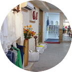

Growel Impex has adapted itself to market trends by constantly upgrading its technology and infrastructure.

PRODUCT DEVELOPMENT
The strength of growel impex is Product Development & Design Inputs by a team of designers dedicated in inspiring and creating new styles . We bring the latest trends in the markets coupled with our in-depth study and shopping and create a line for a particular brand to bring the freshness in the ever changing fashion world. We have a dedicated knowledgeable product design team, travels worldwide to take the best of the trends and transforming to design creation with mood boards, samples and given added advantage to the customers. We believe to become partners in the progress of our customers, we have to understand the needs and deliver the latest design & product development inputs to make the journey a success.
Stitching
With its wide range of advanced machinery & proficient labor capable of producing stylized garments with perfection & finesse, the sewing section has a hi-tech infrastructure. The company deploys over 500 direct drive UBT sewing machines for its manufacturing operations and hosts a variety of specialised machines like Computerized Welt Pocketing Machine, Belt Loop Attachment Machines, Multi Needle Kansai Special Machines ,, sleeve setting, auto jig machines, serging, waist-band attaching, hemming, pocket attaching, button holing, shanking; from top notch manufacturers like SWANTEX, Durkopp Adler, Beisler, AMF Reece, Brother, Juki etc, to provide the necessary impetus.
Sampling
Growel Impex has a dedicated sampling section for both Men & women. The sampling units are well equipped with the latest technology machines and skilled personnel to handle all kinds of processes involved in the sample including beadwork,lacework, hand embroidery,etc with a short lead-time.We have a huge library for wovens which can support the latest trends in the market and the buyers can select the fabric and make the samples with a quick turn around time.

Fabric & trim inventory
Growel Impex has separate stores to deal with the fabric and trim inventory. The company follows a Just In Time(JIT) approach thereby keeping the inventory as low as possible to ensure efficient utilisation of available space. All the fabric and trims sourced are first checked to ensure highest quality and to meet the customer requirements. The fabric store follows a 4 Point system for fabric inspection by professionally trained manpower.
Cutting
The cutting section is equipped with the End Cutter’s and straight knife cutting machines that ensure 100% perfection.This is integrated with the most advanced CAD System from AstorTech that optimizes fabric utilization and minimizes wastage. It improves turnaround times and expedites the cutting process with minimal waste and cost. The section also has Bend Knife machine and Fusing machines.
Finishing
The finishing department adds the necessary final touches to make the product tempting to the customer. The operations such as thread cutting, pressing,spotting and tagging are carried out in finishing. Each garment is thoroughly checked for its final look and presentation as well as the trims required. Each garment is then passed through a needle detector machine after which it is finally packed and shipped to the customer. This section plays the most crucial role in ensuring 100% perfection of all the products. It is inspected that all the features demanded by the clients are incorporated or not.The products carry the brand image of the company. That’s why utmost care has been taken in this section to ensure that all the products are faultless.
Washing
The laundry plant of Growel Impex is equipped with the most modern machinery such as washer extractors,tumblers and PeRC machines to fulfill the specific needs of the clients. Some of the washes which the company specialises in are enzyme,acid, aged, vintage,rubber ball, tea stain and dyeing techniques like garment pigment dyed,sulphur dyed,garment over dyed, dyed over print,tie dye,dip dye,etc. Individual attention is given to maintain the quality standards as per the industry norms. A team of industry professionals assist the technicians in choosing the best possible wash for the garments.The company follows all regulatory measures in the plant. It makes sure that environment is not adversely affected by the operations.

In order to ensure round the clock working, Growel Impex has a specially designed fully automated panel connected to a set of silent DG’s plant which guarantee power back-up in less than 20seconds to allow uninterrupted production in case of power outages.